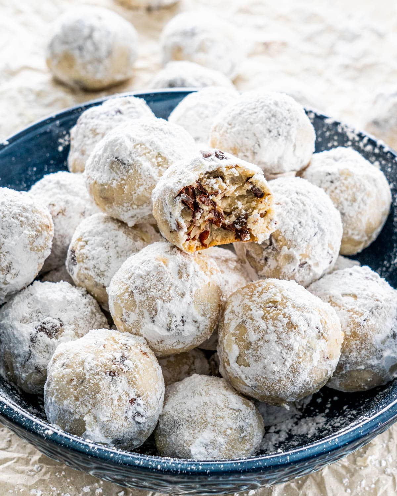

Pecan Snowballs

Description
Easy and a crowd pleaser, these can be made in less than 30 minutes and will be loved by everyone. The dough isn't too sweet so matches nicely with the layer of icing sugar it's rolled in.
Ingredients
- 1/2 cup butter, softened
- 2 tbsp sugar
- 1 tbsp water
- 1 tsp vanilla
- 1 cup flour
- 1 cup pecans
- icing sugar
Steps
- Preheat oven to 350°F.
- Cream together butter and sugar until light and fluffy.
- Add water, vanilla, flour and pecans.
- Roll into small balls and bake for 15 minutes.
- Let cool for 5 minutes, then roll in icing sugar.
Home